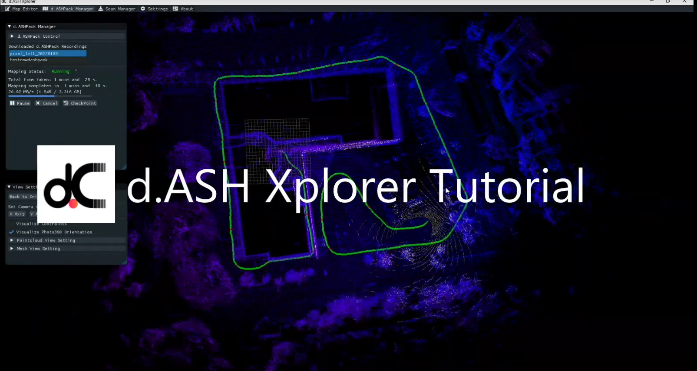

d.ASH Xplorer
|  |
|
d.ASH Xplorer is the 3D pointcloud management application, allowing users to create, edit and export 3D maps for robotics autonomy. d.ASH Xplorer is designed to work with d.ASH Pack and equipped with state-of-the-art SLAM technology for 3D map generation. Users can edit the 3D map by rotating, translating, downsampling and cleaning up pointcloud for autonomy. 2D map can also be generated from the 3D pointcloud using the in-built grid map generator. The entire map generation workflow is fully integrated with d.ASH Fleet Management to significantly shorten and streamline the preparation process for autonomous navigation.
Additionally, d.ASH Xplorer is equipped with other add-ons features such as AutoMerge which is our automatic stitching software of dense 3D scans. AutoMerge utilises sensor fusion to perform automatic scan alignment and scale-consistent stitching with little human intervention. AutoMerge system currently supports Leica BLK360.
Since d.ASH Xplorer is fully integrated with d.ASH Fleet Management system to streamline autonomous robotics deployment, Internet connection is required. Should you required d.ASH Xplorer without Internet connection, please contact us for more details.
Requirements
- PC with sufficiently good GPU
- d.ASH Xplorer software
- Internet Connection (Contact us if you are looking for offline version)
Tutorial
|  |
You can watch the video tutorial below to get a quick overview of how to run d.ASH Xplorer above here.
2.1 Modes
d.ASH Xplorer has 3 main modes for various tasks:
- Map Editor: Perform 3D pointcloud edit, export and upload
- d.ASH Pack Manager: Control d.ASH Pack and generate 3D pointcloud map
- Scan Loader: Download and perform AutoMerge on 3rd party 3D scanner.
These 3 modes form 3 different tabs at the top of d.ASH Xplorer.
2.2 Map Editor
Map editor is used to manage different pointclouds that you have generated. Users can perform rotation, translation, downsampling and other 3D pointcloud editing features.
You can use this mode to visualize 3D pointcloud and 3D mesh by using the load button. File extension ".pcd" and ".obj" are currently supported. After loading, your 3D objects will appear in the list under Map Collections. You can hide or show a pointcloud object by clicking the green eye button.
Remove button simply removes the 3D object from the list. However, it does not delete the file from the PC.
Rename button renames the selected 3D object name.
Export button exports the selected 3D object to a destination of your choice. When clicked, a file dialogue will popup for you to choose the save folder destination. If the 3D object has a mesh, an "obj" file will be exported. On the other hand, if the object has a pointcloud, 3 different files will be saved. They are 3D pointcloud (.pcd), 2D map (.png) and map configuration (.json).
Upload button uploads the 3D map to d.ASH Cloud Fleet Management System. If a map with the same name is found in the cloud, a popup warning will ask the user to either overwrite the existing file or cancel the uploading operation. Once uploaded, users can access or download the map from the cloud.
2.3 Surface Reconstruction
This section allows users to perform mesh reconstruction from 3D pointcloud. Grid size determines the quality of the scan. Larger grid size helps to smoothen the mesh at an expense of quality. There is an option to perform pointcloud clean up when performing surface reconstruction. However, this option tends to significantly slow down the meshing process.
When surface reconstruction is running, map removal is disabled. Additionally, users should not perform any map transformation because the end mesh product will not be in sync with the mesh itself.
2.4 Map Transformation
This section allows users to perform map editing. Users can perform translation and rotation by using XYZ and quaternion values respectively. There are options for users to reset the transformations back to the original state.
In addition, a widget in the center of the screen is designed to facilitate pointcloud transformation. Users can click on the widgets and see live transformation of the 3D object via clicking on the widget. To toggle between translation and rotation mode of the widget, users can choose the right mode under "Widget Mode".
Users can perform downsampling by changing the Pointcloud Map Details. Users can choose between Original and Sparse details, or set their desired voxel grid size.
Map Cleaner helps to remove outliers to make the 3D map cleaner.
2.5 2D Map Generator
This feature creates a 2D map from a 3D map by projecting a section of the 3D map onto an image file from the top view. Users have 3 different configurations: min height, max height and pixel resolution (metre / pixel). To see which region is used for compressions, users can check Show Height-Bounds to display the minimum and maximum height planes.
Once satisfied, click Generate to apply the configurations and view the 2D map.
Users can choose to Save 2D Map separately if needed.
It is recommended to ensure that the freespace is correctly represented because this information will be used for automatic path-planning and visualization on the website. However, if you do not intent to use d.ASH automatic path-planning, getting a clear 2D map for visualization is sufficient.
2.6 d.ASH Pack Manager
This mode allows users to start/stop d.ASH Pack recordings, download d.ASH Pack recordings and generate 3D map through d.ASH Pack Manager window.
Users can only start/stop d.ASH Pack recordings and download d.ASH Pack recording files when d.ASH Xplorer detects that there are online d.ASH Pack. Otherwise, "No online d.ASH Pack found" will be shown.
If there is an online d.ASH Pack, the d.ASH Pack name will pop up on the list of online d.ASH Pack. Click on it to select the d.ASH Pack device.
2.7 d.ASH Pack Control
This section allow users to start/stop d.ASH Pack recordings.
- To start, key in d.ASH Pack recording name and click Start button.
- To stop, click Stop button.
2.8 Download d.ASH Pack Recordings
After clicking on the list of d.ASH Pack, perform the following steps to download the recording:
- Select the desired d.ASH Pack recording file from the recording list.
- If there is an ethernet connection between the PC running d.ASH Xplorer and d.ASH Pack, users will have options to download either wirelessly or via ethernet. It is recommend to download via an ethernet connection for fast downloading speed.
- Click Download to start downloading.
- Once it is completed, the downloaded file will appear in the Downloaded d.ASH Pack Recordings list ready for 3D map generation.
2.9 3D Map Generation
After downloading the d.ASH Pack recording, you can then generate the 3D map for that particular recording.
- Under Map Configs, users can choose different settings for the 3D map generation. For details on the configuration, please refer to the next section
- Select d.ASH Pack recording by clicking on the recording name under the Downloaded d.ASH Pack Recordings list.
- Click Generate Map to start the 3D map generation. You will see the 3D map being generated progressively on the screen. A green line appearing on the screen represents the path taken during the recording process.
- While the 3D map is being generated, users will have the following options:
- Pause: Pause the mapping process (Appear if mapping is running)
- Resume: Resume the mapping process (Appear if mapping is paused)
- Cancel: Cancel the mapping process
- Checkpoint: Export the current 3D map to Map Editor. This is used to backup the 3D map in case there are problems later on.
- When mapping is completed, the completed map will be automatically added to the map list under Map Editor for other purposes such as editing and uploading.
Mapping Configs
To ensure desirable mapping quality, different settings may be required for different environments and terrains. d.ASH Xplorer is equipped with different preset settings. Users are also allowed to create their own custom settings to suite their requirements.
Following 3 different presents are embedded in d.ASH Xplorer:
- General: This preset should work for most environment. We recommend using this preset as the first setting for your mapping.
- Outdoor: Suitable for an outdoor environment with large open space,
- Narrow Space: Suitable for environment with narrow corridors or cluttered space.
Generate Configuration
On top of the mapping configurations, users have the following options:
- Start/Stop Time(%): Users can perform mapping for a part of the d.ASH Pack recording by specifying the start and stop time in percentage (from 0-100%)
- Save Map When Done: When checked, the 3D map will be automatically saved on the PC under
dASH_Xplorer/mapsfolder. The absolute path todASH_Xplorerfolder depends on the operating system. You can search for the folder using the system native file dialogue.
Custom Mapping Configurations
To customise the configurations, please choose Custom preset. The following options are avilable:
- Number of Cores: Uses number of cpu cores for parallel computation. It is recommended to be as high as possible
- Map Corner Voxel Size: Determines the accuracy of corners alignment. The lower the value, the more accurate the alignments
- Map Surface Voxel Size: Determines the accuracy of surface alignment. The lower the value, the more accurate the alignments
- Keyframe Nearest Radius: Radius in meter for scan positions to be considered for loop closure.
- Keyframe Time Difference: Time difference in seconds for different scan positions to be considered for loop closure
- Keyframe Search Number: Number of neighbouring scan positions to be merged for loop closure detection.
- Keyframe Similarity Score: Minimum similarity score between different scans to be considered for loop closure.
- Surrounding Keyframe Search Radius: Radius in meter for scan positions optimization.
Scan Manager (Plugin)
This plugin allows users to manage 3rd-party 3D scanners. Currently, Leica BLK360 scanner is supported.
This plugin is used to perform the following: 1. Download scanMeta file from the robot 2. Download scan data from the scanner 3. Perform AutoMerge on all scans.
Download ScanMeta Files
ScanMeta file (*.scanMeta) holds critical information for each scan point. Each 3D scan activated by d.ASH robotics stack will generate a ScanMeta file. The ScanMeta data can be used to performe AutoMerge for createing digital twin (high accuracy/density 3D pointcloud model). ScanMeta files are grouped by their project names which are set by d.ASH Autonomy Mission.
To download the ScanMeta files, perform the following:
- Connect your PC running d.ASH Xplorer to the Internet and make sure that the robot is online
- Click on the robot from the Online Robot List.
- Select the desired data folder by clicking Change. This folder will be used to store downloaded ScanMeta files. We recommend choosing an empty folder. Otherwise, some ScanMeta files will be overwritten.
- Click on Download Files to expand the window.
- If there are ScanMeta files found on the robot, their project names will be listed under Available Scan Projects. Click on the desired project.
- Click Download to download ScanMeta files for the entire project.
- After downloading, all ScanMeta files will be stored in the folder selected in Step 3.
Download 3D Scan Data From the Scanner
This step performs downloading of 3D scan data from the 3D scanner by using the downloaded ScanMeta files.
- Connect your PC running d.ASH Xplorer to the 3D scanner.
- Select the desried data folder by clicking Change . This folder should have ScanMeta files.
- Click on Download Files to expand the window.
- Under "Download scan data from scanner", click Download
- There will be a window popup showing all ScanMeta filenames found in the folder selected in Step 2. If 3D scan files and scanMeta files with the same name exist, the filename will have "[Downloaded]" appended at the back of their names.
- Use the check boxes on the left to mark 3D scan data for downloading. Users can use Select All or Unselect All buttons for file selections.
- Click Download to start the 3D scan downloading process.
- Once completed, Click Close to close the popup.
AutoMerge
This step performs AutoMerge on the 3D Scan data. AutoMerge utilizes sensor fusion techniques to automatically stitch and align multiple 3D scans for scale-consistent digital twin reconstruction. AutoMerge supports both colored and non-colored pointcloud. To perform AutoMerge, perform the following steps:
- Select the desried data folder by clicking Change . This folder should have both ScanMeta files and 3D scan data files.
- Click on AutoMerge to expand the window.
- AutoMerge Scan File List displays a list of files in the selected folder for AutoMerge. Only filenames with
.scanMetaand.pcdare considered for AutoMerge. - Since AutoMerge relies on the orientation of the 3D scanner to perform stitching, users are encouraged to preview some scans first. This is done by selecting a few scans (greater than two) and click Preview.
- After scan previews have loaded, expand Options and change the Scanner Rotation so that the selected scans are roughly aligned. These rotations will rotate the 3D scan about their centers. As the scanner rotation being changed, the 3D scan previews will also be rotated accordingly. Users do not have to perfectly align the 3D scans manually. Just a rough estimate is sufficient.
- After configuring the scanner rotation, users can start AutoMerge. Click AutoMerge to start the AutoMerge process on the selected files (greater than one). You will see the 3D scans popping up and aligning themselves automatically after some time.
- When AutoMerge has completed, users have the following options:
- Export: Save the AutoMerge results and individual scans with corrected poses. Users can choose to export as
.pcdor.xyzfile formats. - Edit: Export the AutoMerge results to Map Editor for editing.
- Export: Save the AutoMerge results and individual scans with corrected poses. Users can choose to export as
Options
There are 3 different options available for Scan Manager:
- Scanner Rotation: Rotation in degrees of the scanner relative to the robot heading. As this value being changed, the 3D scan preview will also be updated in real-time.
- Optimize Visualization: Check this to optimize rendering. Check this if you notice a laggy visualization.
- Auto save AutoMerge results: Automatically save AutoMerge results to the data folder once AutoMerge has completed.
Tips
- Good Mesh Quality: It is recommended to downsample the pointcloud by using Pointcloud Map Details using a grid size of about 0.1-0.2 metre depending on the quality you would like the pointcloud to be. After that, you run Surface Reconstruction with a grid size larger than what you used for map details. We recommend using grid size of 0.1-0.2 metre for Pointcloud Map Details and 1.0 metre for Surface Reconstruction.